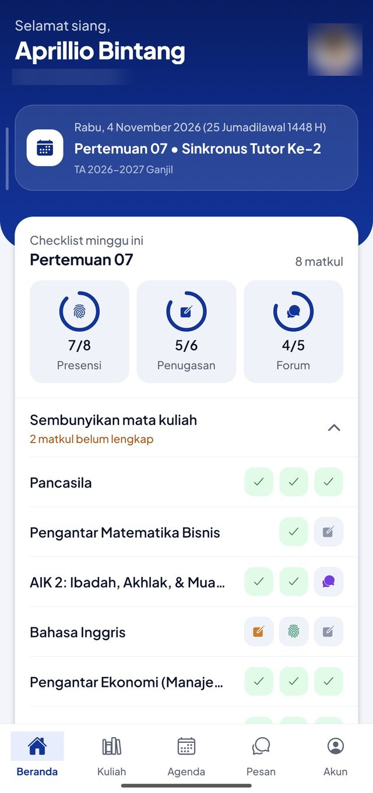
Checklist minggu ini
Lihat presensi, penugasan, dan forum yang belum selesai di semua mata kuliah, bisa dilipat.
Aplikasi Android untuk membuka LMS Solusi | SiberMu dengan lebih ringkas: checklist minggu ini, materi offline, forum, dan agenda dalam satu app.
Download APK (Android)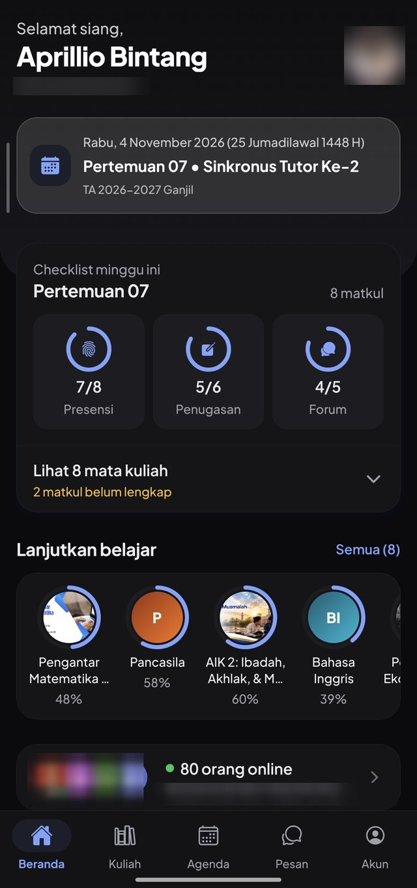
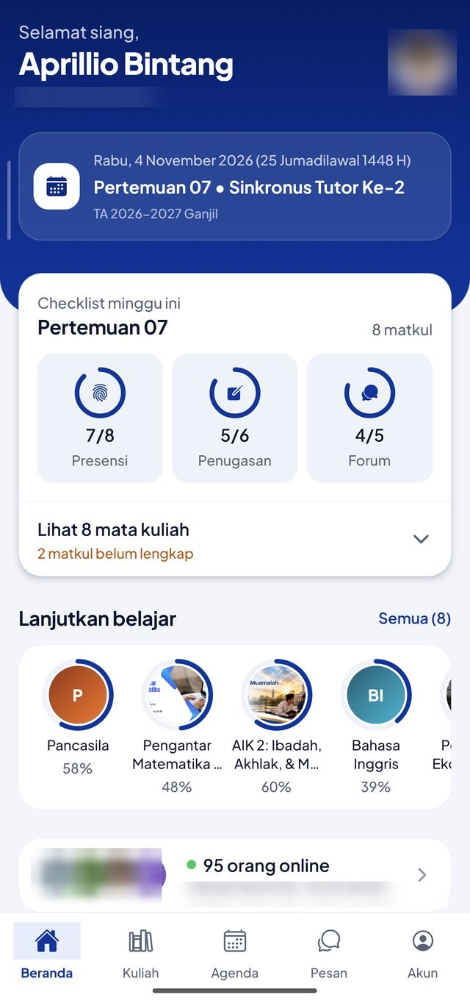
Tangkapan layar asli dari aplikasi. Nama dan foto mahasiswa lain sudah diburamkan; sebagian layar memakai mode demo dengan data contoh.

Lihat presensi, penugasan, dan forum yang belum selesai di semua mata kuliah, bisa dilipat.
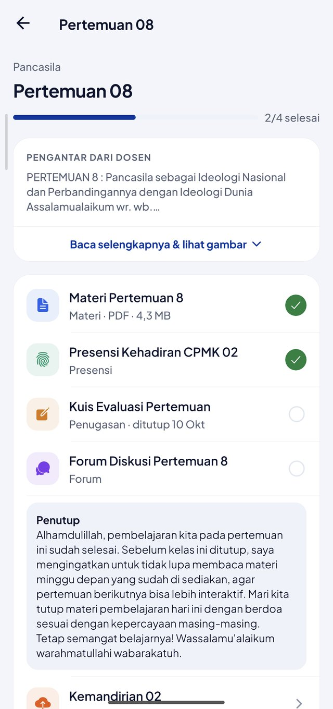
Pengantar dosen di atas, lalu materi, presensi, kuis, dan forum dalam satu daftar dengan progres.
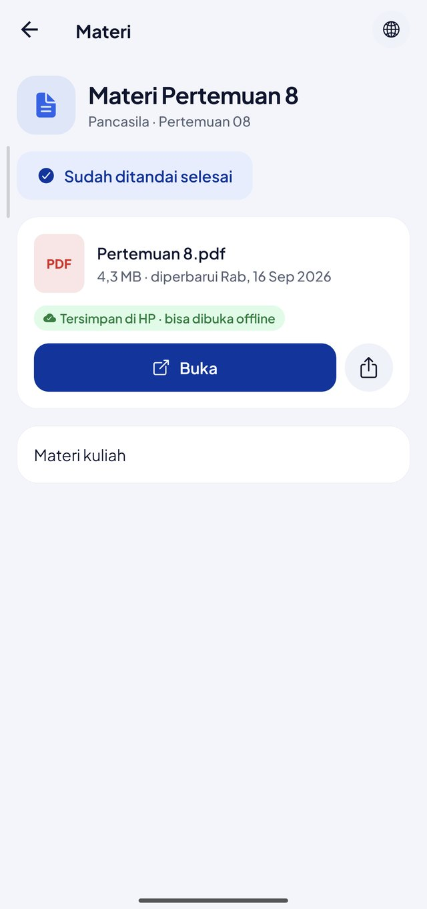
Materi diunduh sekali dan tersimpan di HP, jadi tetap bisa dibuka tanpa internet.
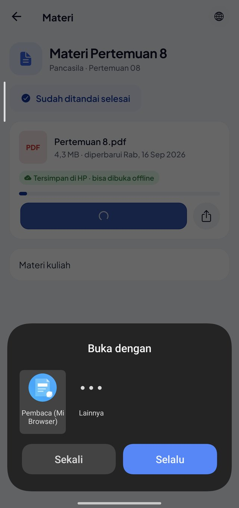
PDF dibuka lewat pembaca PDF yang kamu suka, bukan viewer bawaan yang terbatas.
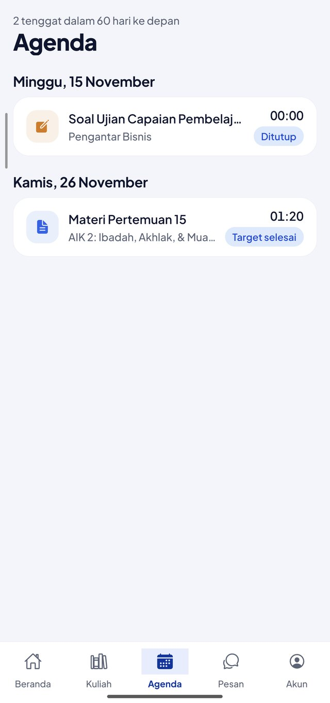
Semua tenggat 60 hari ke depan, dikelompokkan per hari.
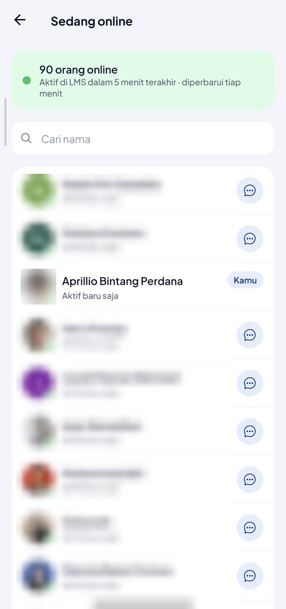
Lihat teman yang sedang aktif di LMS, buka profilnya, dan kirim pesan.
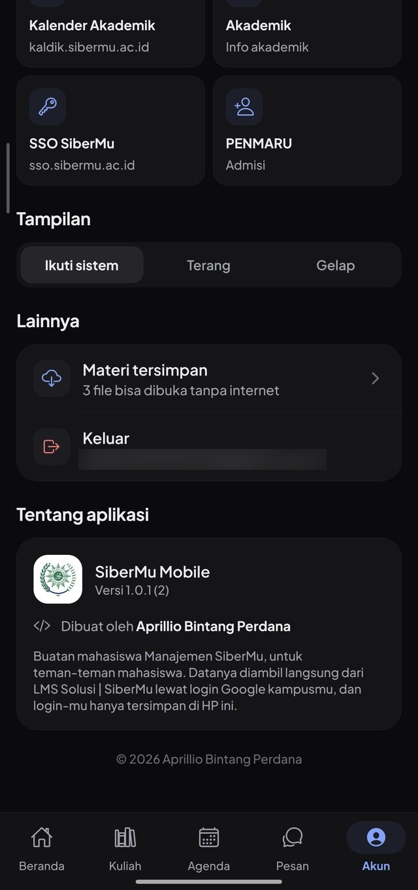
Tampilan terang, gelap, atau ikut pengaturan sistem HP.
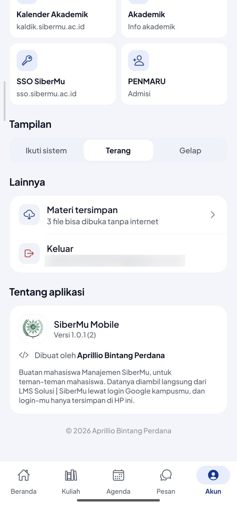
Kelola materi offline, pintasan layanan kampus, dan lihat info pembuat aplikasi.
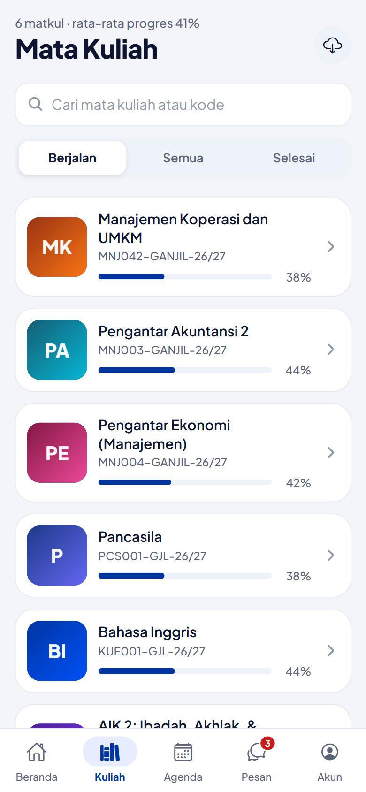
Cari mata kuliah, filter berjalan atau selesai, dan lihat progres tiap matkul.
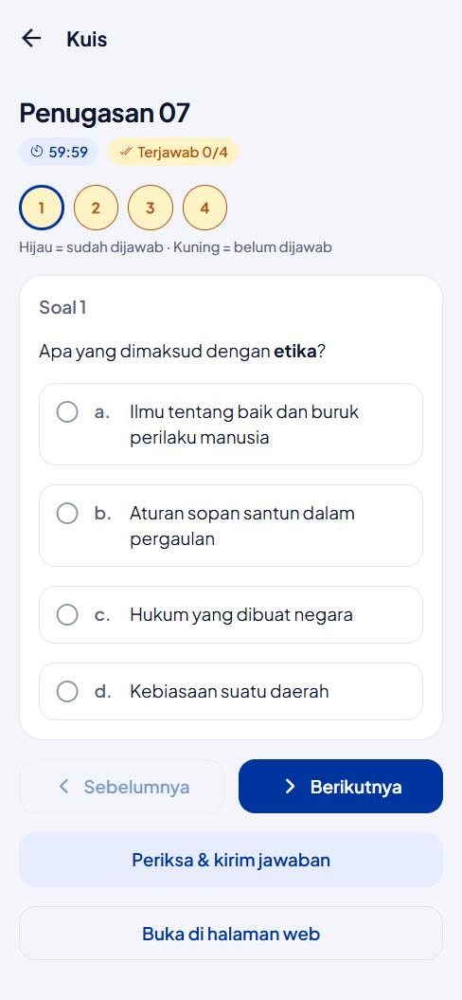
Pilihan ganda, isian, dan uraian dengan timer, simpan otomatis, dan review (versi 1.0.4). UTS dan UAS tetap di web.
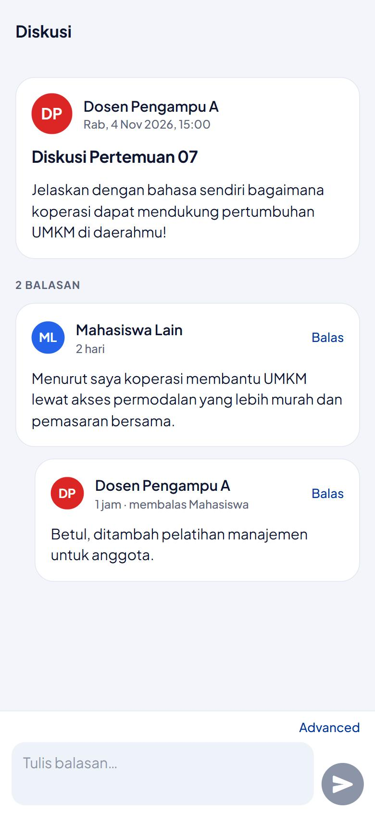
Baca dan balas diskusi, termasuk mode Advanced dengan format teks, pratinjau, dan lampiran.
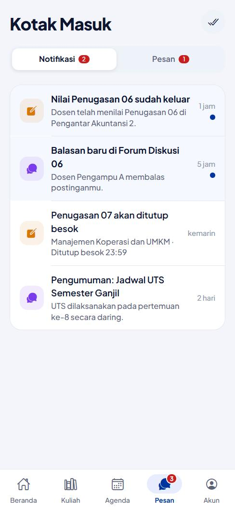
Notifikasi LMS dan chat dalam satu kotak masuk.
Karena belum ada di Play Store, aplikasi dipasang manual dari file APK.
Tekan tombol Download APK di atas dan tunggu file selesai diunduh.
Buka file APK. Jika HP meminta izin, aktifkan Izinkan dari sumber ini untuk browser atau pengelola file yang kamu pakai, lalu kembali dan lanjutkan.
Google Play Protect mungkin memberi peringatan karena aplikasi belum dikenal. Pilih Tetap instal.
Buka aplikasi, lalu masuk dengan akun Google kampusmu. Tidak perlu scan QR.
Setelah login, HP bisa menanyakan aplikasi mana yang membuka tautan. Pilih SiberMu agar kamu kembali ke app.
Terbaru di atas.
Memuat riwayat versi…